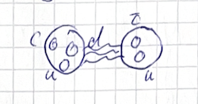
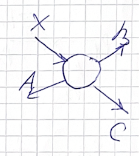
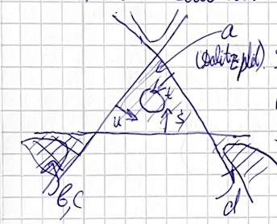
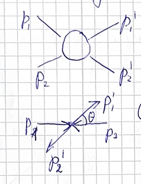
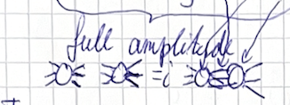
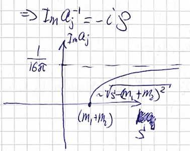
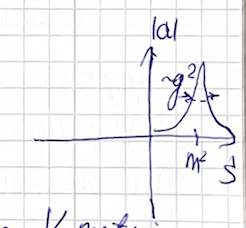
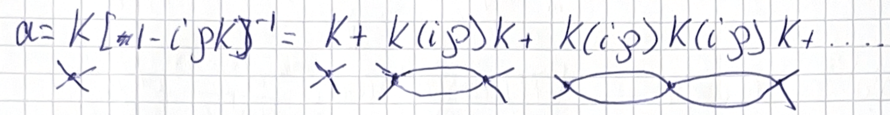

(2024) Lecture 7
Presenter: Mikhail Mikhasenko
Note Taker: Ilya Segal
1 PCC Mass, Binding Energy, and Lifetime Constraints
The particle is a hadronic molecule formed by the \Sigma_c and D^* . Neglecting inelastic channels, its internal structure is that of a molecular bound state.

1.1 Naming and Notation
Q: Should the particle be called PCC? A: No, it is the PCC bar (formerly PC, updated last year). The C indicates charm content. In the notation, indices list heavy quarks because they are conserved in decay; light quarks are not listed. They can be recovered from the capital letter. For example, \Sigma indicates two light quarks (isospin). The S in SACC denotes a pentaquark (five quarks). SACC contains CC plus three others. The PCC^+ has light‑quark content UG . The states we see in this particular channel are of this type.
1.2 Mass and binding energy
Roughly, the mass of the PCC bar is the sum of the masses of its constituents:
M_{PCC} \approx m_{\Sigma_c} + m_{D^*}
That defines the binding energy:
B = m_{\Sigma_c} + m_{D^*} - M_X
Neglecting binding energy, the mass is simply the sum of the constituent masses, which defines the threshold. Since the binding energy is small, the state sits at the threshold.
Q: What is the scale of the binding energy? Approximately 10 MeV? 100 MeV? Less than 10? More than 1? A: Yes.
The mass of \Sigma_c is about 2.5 GeV, and the mass of D^* is about 2 GeV, so the sum is about 4.5 GeV:
M_{\text{threshold}} = m_{\Sigma_c} + m_{D^*} \approx 4.5\;\text{GeV}
This is roughly where one would search for such formations.
1.3 Quantum Numbers — spin algebra, my favorite exercise
The system is in an s‑wave, so parity is -- (minus‑minus). We have a spin‑ 1/2 $_c and a spin‑ 1$ D^* . Their composition gives two possible states:
\frac12 \otimes 1 = \frac12 \oplus \frac32
| State | J^P |
|---|---|
| 1/2 \oplus 1 → 1/2 | \frac12^- |
| 1/2 \oplus 1 → 3/2 | \frac32^- |
Both have a lower bound on the lifetime.
1.4 Decay and Lifetime Bound
Why would this state ever decay? I would love to say “no”. Splitting it into two constituents requires at least the sum of their masses, which is already larger than the particle’s mass. In the rest frame, all the energy is the particle’s mass. If the constituents fly apart, the energy is even higher—that decay is forbidden by energy conservation.
The charm and anti‑charm can annihilate electromagnetically, but that process has very low probability. Strong annihilation (if they have different colors) can produce other quarks, but that is also suppressed for heavy particles.
If inelastic channels are neglected, the dominant decay is weak decay: one of the charm quarks transitions to a strange quark, emitting a W . Because the particle is a bound state of a \Sigma_c and a D^* , one of these constituents decays weakly. The lifetime can be computed from that process.
However, there is another process: the D^* is not the ground state—it can decay to D by emitting a \pi^0 or a \gamma . This gives a lower bound on the lifetime:
\Gamma_X < \Gamma_{D^*}
Since lifetime \tau = 1/\Gamma , we have \tau_X > \tau_{D^*} .
Consider the deuteron: it is made of a proton and a neutron. The proton is stable; the neutron is not stable but lives long. The deuteron is stable because the neutron is so bound inside that it cannot decay. The binding mechanism suppresses the phase space for decay. Similarly, the D meson inside the molecule lives longer than an isolated D^* meson.
1.5 Cascade and Dissociation
Q: Will the \Sigma_c D^* molecule survive by stepping down one energy level instead of falling apart? A: Yes, it can cascade down via one energy step. But it can also dissociate into \Sigma_c D \pi or \Sigma_c D \gamma , because the energy is available.
The binding energy and decay situation are actively discussed in the field; at every conference you see about five talks. This is a hot subject.
2 Signs of Mandelstam Variables for Different Processes
2.0.1 Plane of Invariants



For any 2→2 process (a central interaction vertex with four external legs X, A, B, C ), invariant variables characterize the kinematics.
Definition of Mandelstam variables:
s = (p_A + p_B)^2,\qquad t = (p_B + p_C)^2,\qquad u = (p_C + p_A)^2
Here:
- s is the mass squared of the system of A and B ; \sqrt{s} is the invariant mass.
- t is the mass squared of the system of B and C .
- u is the mass squared of the system of A and C .
Two variables suffice to characterize the kinematics of a four‑point process (counting degrees of freedom). Any pair – s and t , s and u , or t and u – can be used because the three invariants are related by mass constraints. The scattering amplitude depends on only two variables and is defined on the plane of invariants. Different domains on this plane describe different processes.
2.1 Sign analysis for processes a , b , d
The following table summarises the sign conditions (positive/negative) for the Mandelstam variables in each process. (For simplicity, “positive” means larger than the physical threshold; “negative” means unphysical.)
| Process | s | t | u |
|---|---|---|---|
| a (all particles incoming or outgoing) | s > (m_A+m_B)^2 | t > (m_B+m_C)^2 | u > (m_C+m_A)^2 |
| b (one particle crossed) | s < 0 | t > 0 | u < 0 |
| d (one particle crossed) | s < 0 | t < 0 | u > 0 |
Example Socratic exchange:
Q: For process a , is s positive? A: Yes, because s is the mass squared of the real two‑particle system. It is well‑defined and at least (m_A+m_B)^2 . The same applies to t and u .
Q: Is that simply the sum of masses? A: No, it is the sum of four‑vectors, not the sum of masses. Since the particles have momentum in the rest frame, the energy of the system is larger than the sum of masses.
2.1.1 Crossed‑channel interpretation
For process b , t is the physical mass of B and C (positive, above threshold), while s and u are combinations of particles on different sides of the diagram and become negative. Similarly, for process d , u is positive, but s and t are negative.
To describe crossed‑channel reactions with the same invariants, one modifies the definition by swapping momenta with a minus sign for particles that move to the other side of the diagram.
The exact numerical thresholds depend on the specific masses of the particles, but for the purpose of placing processes on the plane of invariants, the sign of each variable is sufficient.
3 The Analytic Connection Between Scattering and Decay Amplitudes
When calculating the real physical contours for kinematics, it is necessary to determine the physical ranges of the scattering variables. For the cosine of the scattering angle, the restriction -1\le\cos\theta\le1 shows that only a certain region of the (s,t,u) space is allowed. The true boundary is often given by a sixth‑order polynomial; at the center lies the Dalitz plot.
The Mandelstam variables are defined as: (see Figure 2) (see Figure 3)
s=(p_A+p_B)^2,\qquad t=(p_A-p_C)^2,\qquad u=(p_A-p_D)^2
There are four distinct physical regions where reactions can occur:
| Region | Conditions |
|---|---|
| a | s>(m_A+m_B)^2,\; t>(m_B+m_C)^2,\; u>(m_C+m_A)^2 |
| b | s<0,\; t>0,\; u<0 |
| c | s<0,\; t<0,\; u<0 |
| d | s<0,\; t<0,\; u>0 |
A single amplitude matrix element describes all four reactions. If you obtain that function and constrain it properly, it gives the transition amplitude for every physical process in the domain. For a given point you compute a complex number (e.g., 1+3i ), which is the value of the quantum transition amplitude. The same matrix element, evaluated at different points, yields complex transition amplitudes for decays as well. I think that is super cool. Without an infinite number of resonances, the amplitude cannot be simultaneously analytic and consistent across all physical regions. This is the core difficulty in modelling hadronic processes.
This unification works very well in QED. Consider Compton scattering: \gamma e^- \to \gamma e^- . This is a compound process. The same matrix element also describes e^+e^- annihilation into two photons and the two‑photon production of an e^+e^- pair.
In hadron physics the situation is more complicated. Because we use perturbation theory, we always model. When we describe the Dalitz plot we model it as a sum of resonances. If you try to compute the amplitude on the scattering domain, it blows up – it has infinities, i.e., unphysical behaviour. The reason is that we employ only a finite number of resonances, but the physics requires analyticity. The fact that the amplitude is defined on all four regions implies that an infinite number of resonances must be included. As seen from the lines in the Dalitz plot, these lines represent resonances. To relate the different domains, one must work with infinite sums; the infinite terms then compensate and give a reasonable result.
For 30 to 50 years there has been an effort to find a set of functions that works everywhere analytically and reasonably. The hardest part is describing the data, because data are described by Regge theory. In this approach one constructs a complex function with the required analytic properties that works in both scattering and decay domains. However, it lacks an exact description of resonance properties; for example, Regge theory predicts resonances with zero width. An important development is now to implement resonances with finite widths.
4 The Kibble Function and the Dalitz Plot Boundaries
The contours of the physical domain are described by a single expression: the Kibble function \Phi(s,t,u) . Solving \Phi(s,t,u)=0 gives the boundaries of the Dalitz plot. For any fixed s (e.g., -50 or +20 ), a solver returns two solutions. (see Figure 3) This function is easy to code.
The building block is the Källén function (also called the Klein or Chalng function): \lambda(x,y,z) = x^2 + y^2 + z^2 - 2xy - 2yz - 2zx.
It is almost a complete polynomial but misses more terms of this table.
The Kibble function is formed from three Källén functions, each corresponding to a different channel: \Phi(s,t,u) = \lambda(\lambda_1, \lambda_2, \lambda_3),
where \lambda_1 = \lambda(s, m_C^2, m_B^2),\quad
\lambda_2 = \lambda(t, m_X^2, m_A^2),\quad
\lambda_3 = \lambda(u, m_X^2, m_B^2).
| Channel | Källén argument | Masses involved |
|---|---|---|
| s -channel | \lambda_1 = \lambda(s, m_C^2, m_B^2) | m_C , m_B |
| t -channel | \lambda_2 = \lambda(t, m_X^2, m_A^2) | m_X , m_A |
| u -channel | \lambda_3 = \lambda(u, m_X^2, m_B^2) | m_X , m_B |
To explore the function, open Wolfram Alpha and ask for a contour plot. The full discussion of the Kibble function and its properties is found in the book by Byckling and Kajantie — the best reference on particle kinematics. (Have we discussed this book? The authors’ names are famously unspellable, but the book is excellent.) It covers the very peculiar properties of both the Kibble and Källén functions.
5 Unitarity and Its Constraints on Scattering Amplitudes
5.1 Unitarity in Scattering Amplitudes
Unitarity is a constraint on scattering amplitudes. In high energy physics, the scattering amplitude is not computed from first principles; instead it is modeled, guided by principles of what the amplitude can and cannot be. You cannot simply write an arbitrary expression that fits the data. A key principle is probability conservation, which transforms into a mathematical statement on the amplitude known as unitarity.
A consequence of unitarity is the optical theorem, which relates the imaginary part of the amplitude to the total cross section:
\operatorname{Im} A = \frac{1}{2} \sigma_{\text{tot}}.
This principle alone already gives a decent lineshape for a scattering amplitude that describes resonance phenomena — you see a bump in the spectrum due to probability conservation. Unitarity tells what expression to take to describe this phenomenon. For example, using the K‑matrix formalism or the Breit–Wigner form:
a = \frac{K}{1 - i K \mathcal{P}}, \qquad K \text{ real} \qquad\text{or}\qquad a = \frac{g^2}{m^2 - s - i g^2 \mathcal{P}}.
Unitarity also concerns the analytic properties of the amplitude: it determines the analytic structure, including the location of singularities such as cuts and branch points in the complex plane. Scattering amplitudes are real analytic functions, and unitarity fixes the positions of cuts from the imaginary part.
5.1.1 Deriving the Unitarity Equations

We will derive three equations, all dealing with scattering amplitudes. The first tells how unitarity acts on the full amplitude:
A - A^* = i \int d\Phi \, A^* A,
where \int d\Phi denotes integration over the phase space of intermediate states.
For partial waves, the amplitude a is a function of a single variable. The two‑body phase space simplifies to
\mathcal{P} = \frac{1}{2} \cdot \frac{1}{8\pi} \cdot \frac{2p}{\sqrt{s}}.
Essentially, a - a^* = 2i \operatorname{Im} a , and unitarity gives
\operatorname{Im} a_l = |a_l|^2 \, \mathcal{P}.
5.1.2 Step‑by‑Step Derivation
Consider a 2\to 2 elastic process. In the interaction diagram, a blob represents some interaction with two incoming and two outgoing particles.
5.2 Kinematics in the Center‑of‑Momentum Frame
In this frame the total momentum is zero, so the lengths of the momentum vectors are equal. Even if particles have different masses, their momenta have the same magnitude: (see Figure 4)
p = |\vec{p}_1| = \frac{\sqrt{\lambda(s, m_1^2, m_2^2)}}{2\sqrt{s}}, (see Figure 2)
where \lambda is the Källén function. For elastic scattering, the final particles are the same as the initial ones, so the masses and the break‑up momentum are the same. The only quantity that changes is the scattering angle.
5.3 The Observable: Angular Distribution
The observable for the interaction is the angular distribution of the outgoing particles. Whatever happens inside the interaction manifests itself only through the angular distribution. For a 2\to 2 process at fixed energy, the only remaining variable is the scattering angle. Thus we have two variables: the energy of the system and the scattering angle. The two‑particle state is characterized by the momenta \vec{p}_1 and \vec{p}_2 ; we use the scattering angle \theta .
5.4 Definition of the Scattering Amplitude
Define the scattering amplitude as the transition matrix element between initial and final two‑particle states:
\langle p_1' p_2' | T | p_1 p_2 \rangle .
Energy‑momentum conservation gives a factor (2\pi)^4 \delta^{(4)}(p_1+p_2 - p_1'-p_2') . We insert the identity operator as an integral over intermediate states. The two‑body phase space element is
d\Phi = \frac{1}{2} \cdot \frac{1}{8\pi} \cdot \frac{2p}{\sqrt{s}} \, d\cos\theta \, \frac{d\phi}{2\pi}.
5.5 State Description
The two‑particle state is defined with particles back‑to‑back. Choose a coordinate system with axes x , y , z . In this system the two‑particle state is described by angles \theta and \phi , and the momentum of particle 1 is characterized by those angles. The same state appears on both sides of the matrix element, and we integrate over all possible angles. The two‑body phase space integration covers all possible directions over the 4\pi solid angle.
5.6 Verifying the Identity
We must verify that the inserted identity operator acts as an identity. This follows from the normalization of states. Inserting the identity leads to an integration over intermediate momenta. Everything is now in place to derive unitarity.
5.6.1 Summary of Key Formulas
| Equation | Interpretation |
|---|---|
| A - A^* = i \int d\Phi \, A^* A | Unitarity condition for the full amplitude |
| \displaystyle \mathcal{P} = \frac{1}{2} \cdot \frac{1}{8\pi} \cdot \frac{2p}{\sqrt{s}} | Two‑body phase space factor |
| \operatorname{Im} a_l = |a_l|^2 \, \mathcal{P} | Unitarity for partial waves, where a_l is the partial‑wave amplitude |
6 Unitarity and Partial-Wave Expansion of the Scattering Amplitude
This is the two-particle scattering amplitude. It is defined by unitarity. (see Figure 4)Q: Shouldn’t there also be from unitarity the option that P_1' = P_2 ? A: They are distinguishable scalar particles of different types to avoid cross terms.
Unitarity of the full scattering operator \hat{S} is the statement \hat{S}\hat{S}^\dagger = \hat{I} . The identity part of \hat{S} describes the transition without interaction. (see Figure 5) By subtracting the identity, we introduce the interaction operator \hat{T} :
\hat{S} = \hat{I} + i\hat{T}
This operator \hat{T} defines the scattering amplitude. In field theory, when we deal with these amplitudes, we always refer to the non‑trivial part.
From \hat{S}\hat{S}^\dagger = \hat{I} we derive the condition on \hat{T} :
\hat{T} - \hat{T}^\dagger = i \hat{T}^\dagger \hat{T}
This critical statement constrains the partial waves and the scattering amplitude.
To obtain a more practical form, we insert a complete set of intermediate states between \hat{T}^\dagger and \hat{T} . For two‑body initial and final states, the intermediate states are themselves two‑particle states. Inserting the identity and integrating over the four‑momentum yields, after imposing energy‑momentum conservation via delta functions, the unitarity relation:
T - T^\dagger = i \int T^\dagger T \, d\Phi
where d\Phi is the two‑body phase space element:
d\Phi = \frac{1}{8\pi} \frac{2p}{\sqrt{s}} \frac{d\cos\theta}{2} \frac{d\phi}{2\pi}
| Form of unitarity | Equation |
|---|---|
| Operator | \hat{T} - \hat{T}^\dagger = i \hat{T}^\dagger \hat{T} |
| Integral | T - T^\dagger = i \int T^\dagger T \, d\Phi |
| Partial wave | a_j - a_j^* = i \frac{1}{8\pi} \frac{2p}{\sqrt{s}} a_j^* a_j |
The most general form sums over all possible intermediate states (any number of particles n ) integrated over n ‑body phase space. Diagrammatically, the amplitude minus its conjugate equals a sum over all intermediate steps, with each loop corresponding to an integration over all configurations.
We then simplify variables in terms of the center‑of‑mass energy s and the momentum transfer t , or equivalently the scattering angle \theta .
The scattering amplitude A(s,t) can be expanded in partial waves:
A(s,t) = \sum_{j=0}^\infty (2j+1) a_j(s) P_j(\cos\theta)
This series converges rapidly, especially in low‑energy physics. There is a natural suppression of high partial waves due to the finite size of hadrons. In experiment, only a few partial waves (two to ten) are needed to describe data. If one keeps the entire sum to infinity, as in Regge theory, the expansion is exact.
The partial‑wave amplitude a_j(s) is a function of a single variable s and carries fixed quantum numbers. A major advantage of partial waves is that they do not mix: conservation laws ensure that a partial wave in the initial state only connects to the same partial wave in the final state.
In the unitarity constraint, each partial wave satisfies its own equation:
a_j - a_j^* = i \frac{1}{8\pi} \frac{2p}{\sqrt{s}} a_j^* a_j
which implies
\operatorname{Im} a_j = -|a_j|^2 \mathcal{P}
where \mathcal{P} = \frac{2p}{8\pi\sqrt{s}} is the phase space factor. Thus, different partial waves do not influence each other.
7 Partial Wave Expansion and the K-Matrix Approach to Resonances
We insert the Legendre polynomial expansion into the partial-wave decomposition and use the d -function to rewrite the angular dependence. The initial state has scattering angle zero, so P_J(1) = 1 ; the final state has angle \theta , and P_J(\cos\theta) = d^J_{00}(\theta) . This yields a cool and powerful expression.
The amplitude expansion is
A(s,t) = \sum_{j=0}^\infty (2j+1)\, a_j(s)\, P_j(\cos\theta).
We integrate over the intermediate-state angles, and both amplitudes are expanded in partial waves. The result is the partial‑wave expansion; the numerical coefficients are the base case.
7.1 Unitarity and the imaginary part

From the unitarity condition we obtain the relation
a_j - a_j^* = i \frac{1}{8\pi} \frac{2p}{\sqrt{s}} \, a_j^* a_j,
which leads to
\operatorname{Im} a_j = -|a_j|^2 \mathcal{P}, \qquad \mathcal{P} = \frac{1}{8\pi} \frac{p}{\sqrt{s}}.
The phase‑space factor \mathcal{P} behaves as follows:
| Region | Behavior |
|---|---|
| Near threshold s \to (m_1+m_2)^2 | \mathcal{P} \propto \sqrt{s-(m_1+m_2)^2} (square‑root onset) |
| High energy s \to \infty | \mathcal{P} \to \dfrac{1}{16\pi} (constant) |
| General expression | \mathcal{P} = \dfrac{1}{16\pi} \dfrac{\lambda^{1/2}}{s} with \lambda the Källén function |
The imaginary part of the inverse amplitude takes the simple form
\frac{1}{a} = \frac{1}{K} - i\mathcal{P},
where K is a real function that encodes the interaction dynamics.
7.2 Modeling the real part: the K‑matrix and Breit‑Wigner
Single‑pole (Breit‑Wigner) model


The simplest choice for$ K$ is a single pole:
K = \frac{g^2}{m^2 - s},
which gives the relativistic Breit‑Wigner amplitude
a = \frac{g^2}{m^2 - s - i g^2 \mathcal{P}}.
The parameter m is the bare mass; the width is determined by g^2\mathcal{P} . This describes a resonance: two particles collide, form an intermediate state, then decay. The cross section peaks when the collision energy equals the resonance mass.
Two‑pole model
If we take two poles,
K = \frac{g_1^2}{m_1^2 - s} + \frac{g_2^2}{m_2^2 - s},
the amplitude a = \dfrac{K}{1 - iK\mathcal{P}} exhibits two peaks and a zero in between. The zero arises because K itself vanishes between the poles. The actual peak positions are not exactly m_1 and m_2 – those are bare masses that become dressed by the self‑energy.
| Feature | Single‑pole | Two‑pole |
|---|---|---|
| K form | \dfrac{g^2}{m^2 - s} | \dfrac{g_1^2}{m_1^2 - s} + \dfrac{g_2^2}{m_2^2 - s} |
| Amplitude | a = \dfrac{g^2}{m^2 - s - i g^2 \mathcal{P}} | a = \dfrac{K}{1 - iK\mathcal{P}} |
| Cross‑section shape | One peak near s = m^2 | Two peaks with a zero between |
| Interpretations | Simple resonance | Two resonances; K vanishes → amplitude zero |
The Taylor expansion of a = K/(1 - iK\mathcal{P}) yields a = K + i K^2 \mathcal{P} - K^3 \mathcal{P}^2 + \cdots
Diagrammatically, K is the point‑like interaction and \mathcal{P} (or \rho ) is the two‑particle propagator – an infinite series of dressing loops.
The real part of the amplitude must be computed or modeled (from lattice, experiment, or theory). Unitarity fixes the imaginary part in terms of phase space, but the real part is genuinely interaction‑dependent.
8 Unitarity and the Argand Diagram
““” The vertex amplitude is a complex function. The magnitude of this complex amplitude has been discussed previously; what remains is the angle—the scattering phase, i.e., the argument of the scattering amplitude.
This phase traces a circle in the complex plane. From threshold, the amplitude increases: it starts small, rises to its largest value, then decreases to zero, and then makes a second loop, where the imaginary part of A is shown. The behavior is a function of s , the squared center-of-mass energy. The maximal value is approached around (m_{1,0})^2 . The second loop corresponds to another full circle. This plot is called an Argand diagram.
As mentioned in the homework, an Argand diagram is a plot of the amplitude A or A times \rho , where \rho = \frac{p}{8\pi\sqrt{s}} is the phase space factor. Define F = A \rho , which is more convenient to plot in the complex plane.
Unitarity of the S -matrix, S S^\dagger = I , leads to: (see Figure 5) (see Figure 6)
T - T^\dagger = i T^\dagger T
and imposes for partial-wave amplitudes: (see Figure 7) (see Figure 8)
\text{Im } a_j = \rho |a_j|^2, \quad \rho = \frac{p}{8\pi\sqrt{s}}
Amplitude unitarity is an important constraint from probability conservation, giving a tool to model the amplitude. It fixes the imaginary part, so only the real part needs to be modeled.
The real part corresponds to a point-like interaction that must be resummed to all orders. Several modeling techniques exist:
| Technique | Description | Example |
|---|---|---|
| K‑matrix formalism | Unitarity is enforced by writing a = \frac{K}{1 - i K \rho} , with K real. | For a resonance, K = \frac{g^2}{m^2 - s} , giving a = \frac{g^2}{m^2 - s - i g^2 \rho} . |
| Polynomial (scattering length) approximation | The real part is modeled as a low‑energy polynomial expansion. | — |